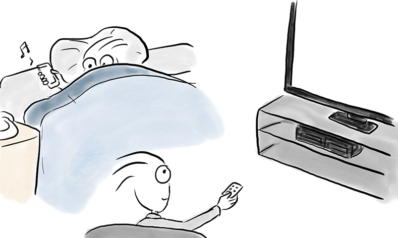
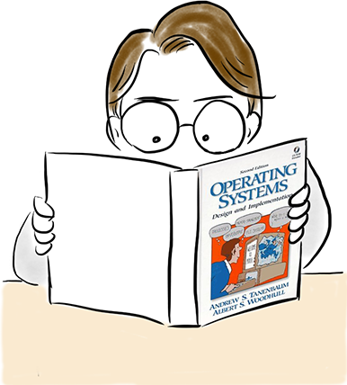
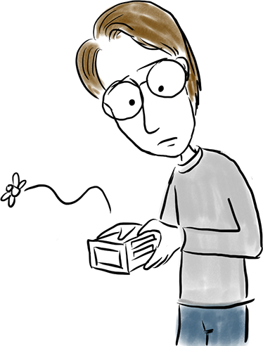
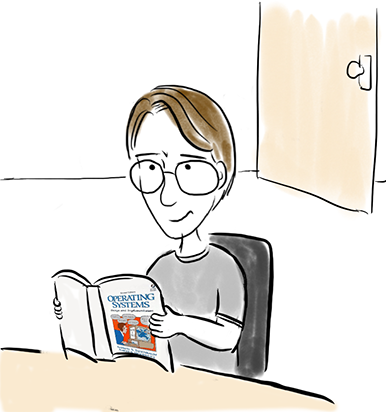

리눅스 커널의
탄생과 발전
글·그림 허준회
오늘날 리눅스는 많은 전자기기를 동작시키는 핵심 소프트웨어, 즉, 운영체제로 사용되고 있다. 그 결과, 우리는 리눅스로 아침을 시작해서 리눅스로 하루를 끝낸다.

아~ 아침이다.
놀라운 것은 리눅스가 리누스 토발즈라는 핀란드 대학생이 1991년 공개한 소스코드로 시작되었다.
리누스는 대학에서 “C언어 및 유닉스 운영체제”라는 수업을 들으면서 앤드류 타넨바움이 쓴 “운영체제: 디자인 및 구현”을 읽게 되었다.

이 책에는 미닉스라는 교육용 유닉스를 다루고 있다.
그리고, 바로 유닉스의 철학에 매료되어 유닉스를 사용할 수 있는 컴퓨터를 사기로 결심한다.
유닉스는 정말 아름답구나.
유닉스를 사용할 컴퓨터가 필요해!

돈이 없구나.
미닉스는 교육용이라 가격은 쌌지만, 동작시키려면 인텔 386 CPU가 필요했다.

결국, PC를 사기전까지 리누스가 할 수 있는 일은 미닉스 책 읽기와 아무일도 않하기였다.
책이나 읽자.
마침내 용돈을 모아 1991년 1월에 386PC를 샀다.
드디어 386PC를 장만했다.